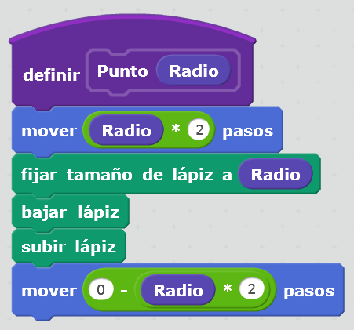
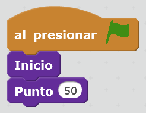
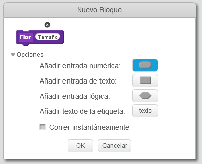
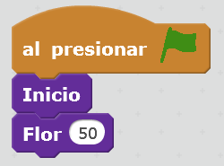
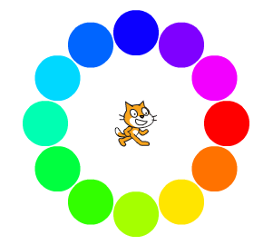
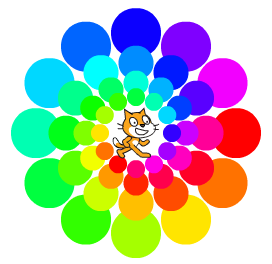
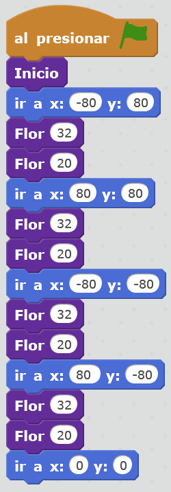

2. Dibujar una flor¶

En esta práctica vamos a programar una serie de funciones que dibujen varios tipos de flores en pantalla.
Iniciamos el editor de Scratch.
Creamos una nueva función llamada Inicio.
Primero pulsamos en el botón más bloques

A continuación pulsamos en crear un bloque

Luego cambiamos el nombre del nuevo bloque a Inicio

Por último pulsamos el botón OK
Programamos la función Inicio con los siguientes bloques.

Este programa coloca al gato en el centro de la pantalla, prepara el lápiz y borra cualquier dibujo anterior.
Crearemos una nueva función llamada Punto.
Primero pulsamos en el botón más bloques
A continuación pulsamos en crear un bloque
Luego cambiamos el nombre del nuevo bloque a Punto
Ahora añadiremos la variable Radio.
Dentro de opciones, añadimos una entrada numérica

A la nueva entrada la llamaremos Radio
Por último pulsamos el botón OK
Ahora programaremos la función que dibuja un punto en la pantalla (bajar lápiz y subir lápiz).
Este programa dibujará un punto de un tamaño que dependerá de la variable radio. Si el radio es muy grande, el punto será muy grande y si el valor de radio es pequeño, el punto dibujado será pequeño.
A continuación crearemos un pequeño programa de prueba para comprobar que se dibuja el punto en la pantalla.
Al ejecutar el programa, pulsando la bandera verde
 ,
aparecerá en la pantalla el siguiente dibujo.
,
aparecerá en la pantalla el siguiente dibujo.
El gato ha dibujado un punto de tamaño 50 a una distancia de 100 pasos
Una vez que todo funcione bien, borraremos el programa de prueba.
Ahora que podemos dibujar puntos, vamos a programar el dibujo de una flor.
Primero crearemos una nueva función llamada Flor.
Primero pulsamos en el botón más bloques
A continuación pulsamos en crear un bloque
Luego cambiamos el nombre del nuevo bloque a Flor
Ahora añadiremos la variable Tamaño.
Dentro de opciones, añadimos una entrada numérica
A la nueva entrada la llamaremos Tamaño
Por último pulsamos el botón OK
A continuación programaremos la función que dibujará una flor en la pantalla.

Para probar que la función está bien escrita, vamos a crear un pequeño programa de prueba que dibuje la flor en pantalla.
Después de pulsar la bandera verde
,
en la pantalla aparecerá una flor hecha con puntos de colores
alrededor del gato como muestra la siguiente imagen.Una vez que todo funcione bien, borraremos el programa de prueba.
Por último vamos a jugar con la función flor para que aparezcan en pantalla dibujos formados por flores de diferentes tamaños.

El programa anterior dibuja en pantalla una imagen formada por varios anillos de colores alrededor del gato.
Pulsaremos en la bandera verde
 para ver
el resultado.Una vez que todo funcione bien, borraremos el programa de prueba.
Con el siguiente programa, se dibujarán en distintos puntos de la pantalla varias flores. Al final el gato estará en medio de todas.
Pulsaremos en la bandera verde
para ver
el resultado.
{kind=link}
{kind=link}
{kind=link}
{kind=link}
Ejercicios¶
Modifica el programa para que todos los puntos de la función flor tengan el mismo color. Dibuja una flor compuesta por anillos grandes rojos en la parte exterior y anillos pequeños y verdes en la parte interior.
Realiza un programa que dibuje cinco anillos situados como el logotipo de los juegos olímpicos.